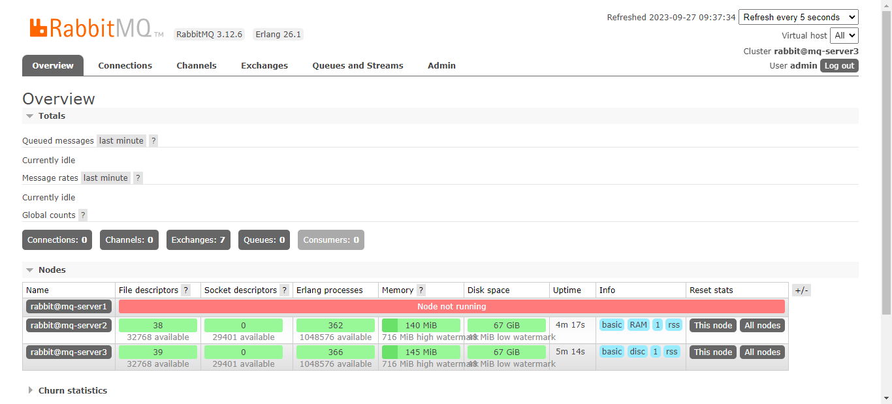

1、Logstash利用redis做缓存从filebeat收集nginx日志和系统日志。 实验目的：
将nginx服务器中的系统日志，访问日志和错误日志通过filebeat收集到redis缓存数据库中，利用 Redis 缓存日志数据,主要解决应用解耦，异步消息，流量削锋等问题。然后通过另外的logstash将redis服
ELK简介：
ELK是由一家elastic公司开发的三个开源项目的首字母缩写
实验系统架构：本实验使用的linux系统版本为rocky8.5
2023/09/27/Logstash利用redis做缓存从filebeat收集nginx日志和系统日志
实验步骤：
准备以下rpm安装包
elasticsearch-7.17.11-x86_64.rpm
filebeat-7.17.11-x86_64.rpm
kibana-7.17.11-x86_64.rpm
logstash-7.17.11-x86_64.rpm
下载地址：
https://mirrors.tuna.tsinghua.edu.cn/elasticstack/
1.1 安装ES1-10.0.0.133,ES2-10.0.0.134,ES3-10.0.0.136 Elasticsearch 是一个分布式的免费开源搜索和分析引擎，适用于包括文本、数字、地理空间、结构化和
1 2 3 4 5 6 7 8 9 10 11 12 13 14 15 16 17 18 19 20 21 22 23 24 25 26 27 28 29 30 31 32 33 34 35 36 37 38 39 40 #系统优化配置最小4G内存2核CPU,内核优化 @es -node1 ~]#echo "vm.max_map_count = 262144" >> /etc/sysctl.conf @es -node1 ~]#echo "fs.file-max = 1000000" >> /etc/sysctl.conf @es -node1 ~]#sysctl -p 262144 @es -node1 ~]# yum -y install elasticsearch-7.17.11-x86_64.rpm @es -node1 ~]# grep "^[a-Z]" /etc/elasticsearch/elasticsearch.yml #修改每个节点的配置节点 -1 #只需要修改此行，每个节点都不能相同 log /elasticsearchtrue 0.0 .0 .0 "10.0.0.133" , "10.0.0.134" ,"10.0.0.136" ]"10.0.0.133" , "10.0.0.134" ,"10.0.0.136" ]true 2 #开启 bootstrap.memory_lock: true 导致无法启动的错误解决方法 @es -node1 ~]# systemctl edit elasticsearch @es -node1 ~]# cat /etc/systemd/system/elasticsearch.service.d/override.conf @es -node1 ~]# systemctl daemon-reload @es -node1 ~]# systemctl restart elasticsearch.service #查看es集群状态 @es -node1 ~]# curl http://127.0.0.1:9200/_cat/health 1695019355 06 :42 :35 ELK-Cluster green 3 3 6 3 0 0 0 0 - 100.0 %#查看所有的节点信息 @es -node1 ~]# curl 'http://127.0.0.1:9200/_cat/nodes?v' 10.0 .0 .133 10 82 1 0.00 0.01 0.03 cdfhilmrstw * node-1 10.0 .0 .136 13 97 1 0.04 0.11 0.08 cdfhilmrstw - node-3 10.0 .0 .134 10 88 1 0.05 0.09 0.06 cdfhilmrstw - node-2
1.2 安装ngxin-10.0.0.138 1 2 3 4 5 6 7 8 9 10 11 12 13 14 15 16 17 18 19 20 21 22 23 24 25 26 27 28 29 30 31 32 [root@nginx ~]@nginx ~]1024 ;"@timestamp" :"$time_iso8601 " ,'"host" :"$server_addr " ,'"clientip" :"$remote_addr " ,'"size" :$body_bytes_sent,'"responsetime" :$request_time,'"upstreamtime" :"$upstream_response_time " ,'"upstreamhost" :"$upstream_addr " ,'"http_host" :"$host " ,'"uri" :"$uri " ,'"domain" :"$host " ,'"xff" :"$http_x_forwarded_for " ,'"referer" :"$http_referer " ,'"tcp_xff" :"$proxy_protocol_addr " ,'"http_user_agent" :"$http_user_agent " ,'"status" :"$status " }';@nginx ~]@nginx ~]"@timestamp" :"2023-09-20T09:26:06+08:00" ,"host" :"10.0.0.138" ,"clientip" :"10.0.0.1" ,"size" :3429 ,"responsetime" :0.000 ,"upstreamtime" :"-" ,"upstreamhost" :"-" ,"http_host" :"10.0.0.138" ,"uri" :"/index.html" ,"domain" :"10.0.0.138" ,"xff" :"-" ,"referer" :"-" ,"tcp_xff" :"" ,"http_user_agent" :"Mozilla/5.0 (Windows NT 10.0; Win64; x64) AppleWebKit/537.36 (KHTML, like Gecko) Chrome/117.0.0.0 Safari/537.36" ,"status" :"200" }"@timestamp" :"2023-09-20T09:26:06+08:00" ,"host" :"10.0.0.138" ,"clientip" :"10.0.0.1" ,"size" :368 ,"responsetime" :0.000 ,"upstreamtime" :"-" ,"upstreamhost" :"-" ,"http_host" :"10.0.0.138" ,"uri" :"/nginx-logo.png" ,"domain" :"10.0.0.138" ,"xff" :"-" ,"referer" :"http://10.0.0.138/" ,"tcp_xff" :"" ,"http_user_agent" :"Mozilla/5.0 (Windows NT 10.0; Win64; x64) AppleWebKit/537.36 (KHTML, like Gecko) Chrome/117.0.0.0 Safari/537.36" ,"status" :"200" }
1.3 安装redis-10.0.0.135 1 2 3 4 5 [root@redis ~]bind 0 .0 .0 .0 123456
1.4 安装filebeat-10.0.0.138文件日志收集上传工具 1 2 3 4 5 6 7 8 9 10 11 12 13 14 15 16 17 18 19 20 21 22 23 24 25 26 27 28 29 30 31 32 [root@nginx ~]# yum -y install filebeat-7.17.11-x86_64.rpm # cat /etc/filebeat/filebeat.yml #修改配置文件将log发送到redis中 # 配置 Filebeat 输入，监听日志文件 enabled: true paths: /var/ log/nginx/ access_json.log # Nginx 访问日志路径 # 将 JSON 数据的字段放在根级别 # 如果字段冲突，覆盖已存在的字段 tags: ["nginx-access" ] # 添加标签以区分不同类型的日志 enabled: true # 启用日志收集 paths: /var/ log/nginx/ error.log # Nginx 错误日志路径 tags: ["nginx-error" ] # 添加标签以区分不同类型的日志 enabled: true # 启用日志收集 paths: /var/ log/messages # 系统日志路径 tags: ["syslog" ] # 添加标签以区分不同类型的日志 # 配置 Filebeat 输出到 Redis hosts: ["10.0.0.135:6379" ] # Redis 主机地址和端口 password: "123456" # Redis 访问密码 db: "0" # Redis 数据库编号 key: "filebeat" # Redis 键名，用于存储日志数据 # systemctl enable --now filebeat.service #启动服务
1.5 安装logstash Logstash 是免费且开放的服务器端数据处理管道，能够从多个来源采集数据，转换数据，然后将数据发
Logstash 主要功能：
1 2 3 4 5 6 7 8 9 10 11 12 13 14 15 16 17 18 19 20 21 22 23 24 25 26 27 28 29 30 31 32 33 34 35 36 37 38 39 40 41 42 43 44 45 46 47 48 49 50 51 52 53 54 55 56 [root@logstash ~]input {host => "10.0.0.135" port => "6379" password => "123456" db => "0" key => "filebeat" data_type => "list" output {if "syslog" in [tags] { hosts => ["10.0.0.133:9200" ,"10.0.0.134:9200" ,"10.0.0.136:9200" ]index => "syslog-%{+YYYY.MM.dd}" "nginx-access" in [tags] {elasticsearch {hosts => ["10.0.0.133:9200" ,"10.0.0.134:9200" ,"10.0.0.136:9200" ]index => "nginx-accesslog-%{+YYYY.MM.dd}" template_overwrite => true "nginx-error" in [tags] {elasticsearch {hosts => ["10.0.0.133:9200" ,"10.0.0.134:9200" ,"10.0.0.136:9200" ]index => "nginx-errorlog-%{+YYYY.MM.dd}" template_overwrite => true
1.6 安装kibana Kibana 是一款开源的数据分析和可视化平台，它是 Elastic Stack 成员之一，设计用于和 Elasticsearch
1 2 3 4 5 6 7 8 9 10 11 [root@kibana ~]# yum install -y kibana-7.17.11-x86_64.rpm @kibana ~]# vim /etc/kibana/kibana.yml @kibana ~]# grep "^[a-Z]" /etc/kibana/kibana.yml 5601 #监听端口,此为默认值 "0.0.0.0" #修改此行的监听地址,默认为localhost "http://10.0.0.133:9200" ,"http://10.0.0.134:9200" ,"http://10.0.0.136:9200" ] #修改此行,指向ES服务器地址,默认为localhost "zh-CN" #修改此行,使用"zh-CN" 显示中文界面,默认英文 @kibana ~]# systemctl enable --now kibana
访问页面http://10.0.0.137:5601添加索引
创建3个日志的索引模式
查看日志索引
日志已经可以查看到
2、分别部署RabbitMQ单机版及RabbitMQ集群。 2.1. 什么是MQ ? 1、MQ的概念
MQ 全称Message Queue（消息队列），是在消息的传输过程中保存消息的容器。多用于系统之间的异步通信 。 下面用图来理解异步通信，并阐明与同步通信的区别。
同步通信：甲乙两人面对面交流，你一句我一句必须同步进行，两人除此之外不做任何事情
同步通信
异步通信：异步通信相当于通过第三方转述对话，可能有消息的延迟，但不需要二人时刻保持联系，消息传给第三方后，两人可以做其他自己想做的事情，当需要获取对方说话的内容时，直接从消息队列里获取即可。
异步通信
2、理解消息队列
消息 就是两台计算机间传送的数据单位；本质上就是一段数据，它能被一个或者多个应用程序所理解，是应用程序之间传递的信息载体。消息可以非常简单，例如只包含文本字符串；也可以更复杂地嵌入对象。
队列 是数据结构中概念。在队列中，数据先进先出，后进后出，犹如排队做核酸。
消息队列 MQ是把消息和队列结合起来，称之为消息队列（Message Queue）。把要传输的数据（消息）与队列进行绑定，用队列先进先出机制来实现消息传递。消息队列由 生产者 和 消费者 两部分构成；生产者主要负责产生消息并把消息放入队列中，再由消费者去处理。消费者可以到指定队列中获取消息，或者订阅相应的队列，最后由MQ服务端进行消息推送。
什么是订阅？ 订阅就是为消费者服务的，消费者提前订阅，当消息队列中有消息产出时，自动去获取消息进行消费。生活中有很多这种例子，比如购买腾讯、优酷等视频会员时就会有订阅模式，当你的会员到期时，会自动帮你完成续费。
二、MQ的优势和劣势
*1、优势和作用*
应用解耦 例如在我们非常熟悉电商系统平台中，用户下订单需要调用订单系统，订单系统需要调用库存系统、支付系统、物流系统等进行数据交互来完成整个下单业务，这种把整个业务都耦合在一起。很容易出现我们经常遇见的问题：
①、当中间某个环节库存系统或支付系统出现异常或故障，会造成整个订单系统崩溃无法完成订单业务；
②、当我们需求开发时，可能会新增一个其他系统的业务与当前的订单系统关联并进行数据交互，此时就必须修改订单系统的代码。如果系统壮大，业务越来越多，越来越复杂时，随之带来的维护成本也会成指数增加。
支付系统异常业务不可达
由此我们不难看出 系统耦合性越高，容错性和可维护性就会越低。 如果在系统中引入MQ，即订单系统将消息先发送到MQ中，MQ再将数据消息转发到其他系统，问题就可以得到解决，MQ天生就是来干这个事的。那么当我们加入MQ以后整个系统会发生什么变化？
①、由于订单系统只发消息给MQ，不直接对接其他系统，如果其他任何一个系统出现异常或故障时，不影响整个订单业务的执行。当异常或故障解决以后，程序自动从MQ获取数据信息完成后续相关业务逻辑即可。
②、如果需求修改，新增了一个业务系统，此时无需修改其他系统的代码，只需修改MQ将消息发送给新增的系统即可，实现数据信息的可靠有效传递。使用MQ让系统应用间进行解耦，提升整个系统的容错性和可维护性
使用MQ，其他业务异常/故障，不影响业务的执行
异步提速 开发一款App系统，其登录注册是最为常见的需求，例如注册的业务有手机注册入库、绑定邮箱验证、手机短信验证。
没有使用MQ前
用户的注册操作需要等待350ms才能得到响应，如果邮件验证系统/手机短信通知系统耗时比较长，那么用户的响应随之就会变长，非常影响客户的体验度，而当使用了MQ后，客户的体验度飙升。
使用MQ后
削峰填谷 假设系统承载的QPS是1000，如果流量顶峰时达到50000，则会造成系统压垮崩溃。使用了MQ之后，限制消费消息的速度为1000，把数据产生的压力放在MQ中，系统的高峰就会被削掉，这个过程叫 削峰 ，因为消息积压的数据比较多，在高峰期过后的一段时间内，消费消息的速度还会继续维持在这个速度，直到把积压的消息消费完，这个过程叫 填谷 。这样可以大大提高系统的稳定性和用户体验。
*2、劣势*
系统可用性降低： 系统引入的外部依赖越多，系统稳定性越差。一旦MQ宕机，就会对业务造成影响。
系统复杂度提高： MQ的加入大大增加了系统的复杂度，以前系统间是同步的远程调用，现在是通过MQ进行异步调用。
一致性问题 ： A系统处理完业务，通过MQ给B、C、D三个系统发消息数据，如果B系统、C系统处理成功，D系统处理失败，则会造成数据处理的不一致。
三、MQ的应用场景
1、高峰流量：抢红包、秒杀活动、抢火车票等这些业务场景都是短时间内需要处理大量请求，如果直接连接系统处理业务，会耗费大量资源，有可能造成系统瘫痪。 而使用MQ后，可以先让用户将请求发送到MQ中，MQ会先保存请求消息，不会占用系统资源，且MQ会进行消息排序，先请求的秒杀成功，后请求的秒杀失败。
抢红包
2、消息分发：如电商网站要推送促销信息，该业务耗费时间较多，但对时效性要求不高，可以使用MQ做消息分发。
促销
3、数据同步：假如我们需要将数据保存到数据库之外，还需要一段时间将数据同步到缓存（如Redis）、搜索引擎（如Elasticsearch）中。此时可以将数据库的数据作为消息发送到MQ中，并同步到缓存、 搜索引擎中。
同步
4、异步处理：在电商系统中，订单完成后，需要及时的通知子系统（进销存系统发货，用户服务积分，发送短信）进行下一步操作。为了保证订单系统的高性能，应该直接返回订单结果，之后让MQ通知子系统做其他非实时的业务操作。这样能保证核心业务的高效及时
消息通知
5、离线处理：在银行系统中，如果要查询近十年的历史账单，这是非常耗时的操作。如果发送同步请求，则会花费大量时间等待响应。此时使用MQ发送异步请求，等到查询出结果后获取结果即可。
四、AMQP
1、什么是 AMQP ： 即Advanced Message Queuing Protocol(高级消息队列协议)，是一个网络协议 ，专门为消息中间件设计。基于此协议的客户端与消息中间件可传递消息，并不受不同中间件产品，不同开发语言等条件的限制。2006年AMQP规范发布，类比HTTP。
2、AMQP工作过程： 生产者(Publisher)将消息发布到交换机(Exchange)，交换机根据规则将消息分发给交换机绑定的队列(Queue)，队列再将消息投递给订阅了此队列的消费者
AMQP
五、工作原理
工作原理
Producer【消息的生产者】 一个向交换机发布消息的客户端应用程序。
Connection【连接】 生产者/消费者和RabbitMQ服务器之间建立的TCP连接。
Channel【信道】 是TCP里面的虚拟连接。例如：Connection相当于电缆，Channel相当于独立光纤束，一条TCP连接中可以创建多条信道，增加连接效率。无论是发布消息、接收消息、订阅队列都是通过信道完成的。
Broker 消息队列服务器实体。即RabbitMQ服务器
Virtual Host【虚拟主机】 出于多租户和安全因素设计的，把AMQP的基本组件划分到一个虚拟的分组中。每个vhost本质上就是一个mini版的RabbitMQ服务器，拥有自己的队列、交换机、绑定和权限机制。当多个不同的用户使用同一个RabbitMQ服务器时，可以划分出多个虚拟主机。RabbitMQ默认的虚拟主机路径是 /
Exchange【交换机】 用来接收生产者发送的消息，并根据分发规则，将这些消息分发给服务器中的队列中。不同的交换机有不同的分发规则。
Queue【消息队列】 用来保存消息直到发送给消费者。它是消息的容器，也是消息的终点。消息一直在队列里面，等待消费者链接到这个 队列将其取走。
Binding【绑定】 消息队列和交换机之间的虚拟连接，绑定中包含路由规则，绑定信息保存到交换机的路由表中，作为消息的分发依据。
Consumer【消息的消费者】 表示一个从消息队列中取得消息的客户端应用程序。 ….RabbitMQ的概念到此结束。 ….以上知识库转自知乎@逻辑-分享是学习的源泉，交流是进步的阶梯。
2.2 MQ部署单机版。 Rocky8.5安装rabbitmq 下载rpm包安装
下载地址：
rabbitmq https://www.rabbitmq.com/install-rpm.html#downloads
erlang(运行rabbitmq运行需要安装此依赖)https://github.com/rabbitmq/erlang-rpm/
1 2 3 4 5 6 7 8 9 10 [root@mq -server1 ~]127.0 .0.1 localhost localhost.localdomain localhost4 localhost4.localdomain41 localhost localhost.localdomain localhost6 localhost6.localdomain610.0 .0.136 mq-server1 mq-server1.xinqi.org @mq -server1 ~]@mq -server1 ~]@mq -server1 ~]@mq -server1 ~]
访问页面

2.3 MQ集群部署3个节点。
1 2 3 4 5 6 7 8 9 10 11 12 13 14 15 16 17 18 19 20 21 22 23 24 25 26 27 28 29 30 31 32 33 34 35 36 37 38 39 40 41 42 43 44 45 46 47 48 49 50 51 52 53 54 55 56 57 58 59 60 61 62 63 64 65 66 67 68 69 70 cat /etc/hosts 10.0 .0.133 mq-server1 mq-server1.xinqi.org10.0 .0.134 mq-server2 mq-server2.xinqi.org10.0 .0.136 mq-server3 mq-server3.xinqi.org3 台.erlang.cookie需要相同10.0 .0.134 :/var/lib/rabbitmq/ .erlang.cookie10.0 .0.136 :/var/lib/rabbitmq/ .erlang.cookie@mq -server1: ~@mq -server1: ~@mq -server1 @mq -server1: ~@mq -server1 with rabbit@mq -server3@mq -server1: ~@mq -server1 ...@mq -server2: ~@mq -server2 ...@mq -server2: ~@mq -server2 ...@mq -server2: ~@mq -server2 with rabbit@mq -server3@mq -server2: ~@mq -server2 ...@mq -server3 ~]@mq -server3 ...name: rabbit@mq -server3CPU cores available cluster-wide: 6 @mq -server3RAM Nodes@mq -server1@mq -server2@mq -server1@mq -server2@mq -server3@mq -server3: RabbitMQ 3.12 .6 on Erlang 26.1 @mq -server2: RabbitMQ 3.12 .6 on Erlang 26.1 @mq -server1: RabbitMQ 3.12 .6 on Erlang 26.1 CPU CoresNode: rabbit@mq -server3, available CPU cores: 2 Node: rabbit@mq -server2, available CPU cores: 2 Node: rabbit@mq -server1, available CPU cores: 2 Node: rabbit@mq -server3, status: not under maintenanceNode: rabbit@mq -server2, status: not under maintenanceNode: rabbit@mq -server1, status: not under maintenance